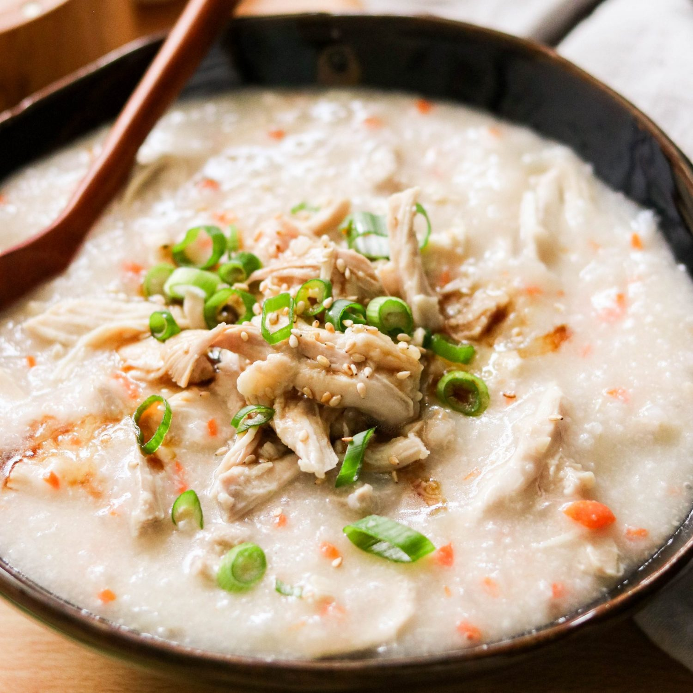

Porridge

Description
Chinese porridge, also known as "zhou" or "juk", is a well-loved recipe historically cooked by peasants and enjoyed by royalty alike. Today it is still a major stable: ordered at restaurants and cooked at home for a hearty breakfast or recovery meal for the sick.
The key to good porridge with a thick, silky texture, is patience. Take your time to cook our the rice, break it down, and release the starches that will make your porridge rich and taste amazing.
Ingredients
- Uncooked rice, recommended frozen overnight
- Chicken stock
- Salt and white pepper powder
- Thousand year old egg (preserved duck egg)
- Lean chicken meat
- Oyster sauce
- Ginger
Steps
- Fill your pot with one quarter chicken stock and three quarters water and set it boiling
- Once your liquid is boiled, add the uncooked rice
- Stir as little as possible to avoid rice sticking to the bottom of your pot
- Cook the rice for 20 minutes and stir it once and cook until silky (an additional 20-40 minutes)
- You can use a whisk to speed up this process and break down the grains of rice
- Cut your chicken into thin strips and marinate in oyster sauce, a little potato starch, and seal together with a little oil
- Peel and dice your thousand year old egg
- Peel and mince finely (or use a grater) your ginger
- Once your rice porridge texture is good, add the chicken, ginger, and duck egg. And season with salt and white pepper
- Optionally garnish with chopped green onion
- Enjoy!